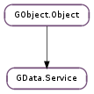

| Subclasses: | GData.CalendarService, GData.ContactsService, GData.DocumentsService, GData.PicasaWebService, GData.YouTubeService |
|---|
| static | get_authorization_domains(service_type) |
| delete_entry(domain, entry, cancellable) | |
| delete_entry_async(domain, entry, cancellable, callback, *user_data) | |
| delete_entry_finish(async_result) | |
| get_authorizer() | |
| get_locale() | |
| get_proxy_uri() | |
| get_timeout() | |
| insert_entry(domain, upload_uri, entry, cancellable) | |
| insert_entry_async(domain, upload_uri, entry, cancellable, callback, *user_data) | |
| insert_entry_finish(async_result) | |
| is_authorized() | |
| query(domain, feed_uri, query, entry_type, cancellable, progress_callback, *progress_user_data) | |
| query_async(domain, feed_uri, query, entry_type, cancellable, progress_callback, progress_user_data, ...) | |
| query_finish(async_result) | |
| query_single_entry(domain, entry_id, query, entry_type, cancellable) | |
| query_single_entry_async(domain, entry_id, query, entry_type, cancellable, callback, *user_data) | |
| query_single_entry_finish(async_result) | |
| set_authorizer(authorizer) | |
| set_locale(locale) | |
| set_proxy_uri(proxy_uri) | |
| set_timeout(timeout) | |
| update_entry(domain, entry, cancellable) | |
| update_entry_async(domain, entry, cancellable, callback, *user_data) | |
| update_entry_finish(async_result) |
| Name | Type | Flags | Description |
|---|---|---|---|
| authorizer | GData.Authorizer | r/w | An authorizer object to provide an authorization token for each request. |
| locale | str | r/w | The locale to use for network requests, in Unix locale format. |
| proxy-uri | Soup.URI | r/w | The proxy URI used internally for all network requests. |
| timeout | int | r/w | A timeout, in seconds, for network operations. |
None
| Name | Type | Access |
|---|---|---|
| parent | GObject.Object | r |
Bases: GObject.Object
All the fields in the GData.Service structure are private and should never be accessed directly.
| Parameters: | service_type (GObject.GType) – the GObject.Type of the GData.Service subclass to retrieve the authorization domains for |
|---|---|
| Returns: | an unordered list of GData.AuthorizationDomain s; free with GLib.List.free () |
| Return type: | [GData.AuthorizationDomain] |
Retrieves the full list of GData.AuthorizationDomain s which relate to the specified service_type. All the GData.AuthorizationDomain s are unique and interned, so can be compared with other domains by simple pointer comparison.
Note that in addition to this method, GData.Service subclasses may expose some or all of their authorization domains individually by means of individual accessor functions.
| Parameters: |
|
|---|---|
| Raises: | |
| Returns: | |
| Return type: |
Deletes entry from the server. For more information about the concept of deleting entries, see the online documentation for the GLib.Data protocol.
If cancellable is not None, then the operation can be cancelled by triggering the cancellable object from another thread. If the operation was cancelled before or during network activity, the error Gio.IOErrorEnum.CANCELLED will be returned. Cancellation has no effect after network activity has finished, however, and the deletion will return successfully (or return an error sent by the server) if it is first cancelled after network activity has finished. See the overview of cancellation for more details.
If there is an error deleting the entry, a GData.ServiceError.PROTOCOL_ERROR error will be returned. Currently, subclasses cannot cannot override this or provide more specific errors.
| Parameters: |
|
|---|
Deletes entry from the server. self and entry are both reffed when this function is called, so can safely be unreffed after this function returns.
For more details, see GData.Service.delete_entry (), which is the synchronous version of this function.
When the operation is finished, callback will be called. You can then call GData.Service.delete_entry_finish () to get the results of the operation.
| Parameters: | async_result (Gio.AsyncResult) – a Gio.AsyncResult |
|---|---|
| Raises: | GLib.GError |
| Returns: | True on success, False otherwise |
| Return type: | bool |
Finishes an asynchronous entry deletion operation started with GData.Service.delete_entry_async ().
| Returns: | the authorizer object for this service, or None |
|---|---|
| Return type: | GData.Authorizer |
Gets the GData.Authorizer object currently in use by the service. See the documentation for GData.Service :authorizer for more details.
| Returns: | the current locale |
|---|---|
| Return type: | str |
Returns the locale currently being used for network requests, or None if the locale is the default.
| Returns: | the proxy URI, or None |
|---|---|
| Return type: | Soup.URI |
Gets the proxy URI on the GData.Service ‘s Soup.Session.
| Returns: | the timeout, or 0 |
|---|---|
| Return type: | int |
Gets the GData.Service :timeout property; the network timeout, in seconds.
| Parameters: |
|
|---|---|
| Raises: | |
| Returns: | an updated GData.Entry, or None ; unref with GObject.Object.unref () |
| Return type: |
Inserts entry by uploading it to the online service at upload_uri. For more information about the concept of inserting entries, see the online documentation for the GLib.Data protocol.
The service will return an updated version of the entry, which is the return value of this function on success.
If cancellable is not None, then the operation can be cancelled by triggering the cancellable object from another thread. If the operation was cancelled before or during network activity, the error Gio.IOErrorEnum.CANCELLED will be returned. Cancellation has no effect after network activity has finished, however, and the insertion will return successfully (or return an error sent by the server) if it is first cancelled after network activity has finished. See the overview of cancellation for more details.
If the entry is marked as already having been inserted a GData.ServiceError.ENTRY_ALREADY_INSERTED error will be returned immediately (there will be no network requests).
If there is an error inserting the entry, a GData.ServiceError.PROTOCOL_ERROR error will be returned. Currently, subclasses cannot cannot override this or provide more specific errors.
| Parameters: |
|
|---|
Inserts entry by uploading it to the online service at upload_uri. self, upload_uri and entry are all reffed/copied when this function is called, so can safely be freed after this function returns.
For more details, see GData.Service.insert_entry (), which is the synchronous version of this function.
When the operation is finished, callback will be called. You can then call GData.Service.insert_entry_finish () to get the results of the operation.
| Parameters: | async_result (Gio.AsyncResult) – a Gio.AsyncResult |
|---|---|
| Raises: | GLib.GError |
| Returns: | an updated GData.Entry, or None ; unref with GObject.Object.unref () |
| Return type: | GData.Entry |
Finishes an asynchronous entry insertion operation started with GData.Service.insert_entry_async ().
| Returns: | True if the service is authorized for all its domains, False otherwise |
|---|---|
| Return type: | bool |
Determines whether the service is authorized for all the GData.AuthorizationDomain s it belongs to (as returned by GData.Service.get_authorization_domains ()). If the service’s GData.Service :authorizer is None, False is always returned.
This is basically a convenience method for checking that the service’s GData.Authorizer is authorized for all the service’s GData.AuthorizationDomain s.
| Parameters: |
|
|---|---|
| Raises: | |
| Returns: | a GData.Feed of query results, or None ; unref with GObject.Object.unref () |
| Return type: |
Queries the service’s feed_uri feed to build a GData.Feed.
If cancellable is not None, then the operation can be cancelled by triggering the cancellable object from another thread. If the operation was cancelled before or during network activity, the error Gio.IOErrorEnum.CANCELLED will be returned. Cancellation has no effect after network activity has finished, however, and the query will return successfully (or return an error sent by the server) if it is first cancelled after network activity has finished. See the overview of cancellation for more details.
A GData.ServiceError.PROTOCOL_ERROR will be returned if the server indicates there is a problem with the query, but subclasses may override this and return their own errors. See their documentation for more details.
For each entry in the response feed, progress_callback will be called in the main thread. If there was an error parsing the XML response, a GData.ParserError will be returned.
If the query is successful and the feed supports pagination, query will be updated with the pagination URIs, and the next or previous page can then be loaded by calling GData.Query.next_page () or GData.Query.previous_page () before running the query again.
If the GData.Query ‘s ETag is set and it finds a match on the server, None will be returned, but error will remain unset. Otherwise, query ‘s ETag will be updated with the ETag from the returned feed, if available.
| Parameters: |
|
|---|
Queries the service’s feed_uri feed to build a GData.Feed. self, feed_uri and query are all reffed/copied when this function is called, so can safely be freed after this function returns.
For more details, see GData.Service.query (), which is the synchronous version of this function.
When the operation is finished, callback will be called. You can then call GData.Service.query_finish () to get the results of the operation.
| Parameters: | async_result (Gio.AsyncResult) – a Gio.AsyncResult |
|---|---|
| Raises: | GLib.GError |
| Returns: | a GData.Feed of query results, or None ; unref with GObject.Object.unref () |
| Return type: | GData.Feed |
Finishes an asynchronous query operation started with GData.Service.query_async ().
| Parameters: |
|
|---|---|
| Raises: | |
| Returns: | a GData.Entry, or None ; unref with GObject.Object.unref () |
| Return type: |
Retrieves information about the single entry with the given entry_id. entry_id should be as returned by GData.Entry.get_id ().
Parameters and errors are as for GData.Service.query (). Most of the properties of query aren’t relevant, and will cause a server-side error if used. The most useful property to use is GData.Query :etag, which will cause the server to not return anything if the entry hasn’t been modified since it was given the specified ETag; thus saving bandwidth. If the server does not return anything for this reason, GData.Service.query_single_entry () will return None, but will not set an error in error.
| Parameters: |
|
|---|
Retrieves information about the single entry with the given entry_id. entry_id should be as returned by GData.Entry.get_id (). self, query and entry_id are reffed/copied when this function is called, so can safely be freed after this function returns.
For more details, see GData.Service.query_single_entry (), which is the synchronous version of this function.
When the operation is finished, callback will be called. You can then call GData.Service.query_single_entry_finish () to get the results of the operation.
| Parameters: | async_result (Gio.AsyncResult) – a Gio.AsyncResult |
|---|---|
| Raises: | GLib.GError |
| Returns: | a GData.Entry, or None ; unref with GObject.Object.unref () |
| Return type: | GData.Entry |
Finishes an asynchronous query operation for a single entry, as started with GData.Service.query_single_entry_async ().
| Parameters: | authorizer (GData.Authorizer) – a new authorizer object for the service, or None |
|---|
Sets GData.Service :authorizer to authorizer. This may be None if the service will only make requests in future which don’t require authorization. See the documentation for GData.Service :authorizer for more information.
| Parameters: | locale (str or None) – the new locale in Unix locale format, or None for the default locale |
|---|
Set the locale used for network requests to locale, given in standard Unix locale format. See GData.Service :locale for more details.
Note that while it’s possible to change the locale after sending network requests, it is unsupported, as the server-side software may behave unexpectedly. The only supported use of this function is after creation of a service, but before any network requests are made.
| Parameters: | proxy_uri (Soup.URI or None) – the proxy URI, or None |
|---|
Sets the proxy URI on the Soup.Session used internally by the given GData.Service. This forces all requests through the given proxy.
If proxy_uri is None, no proxy will be used.
Note that if a GData.Authorizer is being used with this GData.Service, the authorizer might also need its proxy URI setting.
| Parameters: | timeout (int) – the timeout, or 0 |
|---|
Sets the GData.Service :timeout property; the network timeout, in seconds.
If timeout is 0, network operations will never time out.
Note that if a GData.Authorizer is being used with this GData.Service, the authorizer might also need its timeout setting.
| Parameters: |
|
|---|---|
| Raises: | |
| Returns: | an updated GData.Entry, or None ; unref with GObject.Object.unref () |
| Return type: |
Updates entry by PUTting it to its edit link’s URI. For more information about the concept of updating entries, see the online documentation for the GLib.Data protocol.
The service will return an updated version of the entry, which is the return value of this function on success.
If cancellable is not None, then the operation can be cancelled by triggering the cancellable object from another thread. If the operation was cancelled before or during network activity, the error Gio.IOErrorEnum.CANCELLED will be returned. Cancellation has no effect after network activity has finished, however, and the update will return successfully (or return an error sent by the server) if it is first cancelled after network activity has finished. See the overview of cancellation for more details.
If there is an error updating the entry, a GData.ServiceError.PROTOCOL_ERROR error will be returned. Currently, subclasses cannot cannot override this or provide more specific errors.
| Parameters: |
|
|---|
Updates entry by PUTting it to its edit link’s URI. self and entry are both reffed when this function is called, so can safely be unreffed after this function returns.
For more details, see GData.Service.update_entry (), which is the synchronous version of this function.
When the operation is finished, callback will be called. You can then call GData.Service.update_entry_finish () to get the results of the operation.
| Parameters: | async_result (Gio.AsyncResult) – a Gio.AsyncResult |
|---|---|
| Raises: | GLib.GError |
| Returns: | an updated GData.Entry, or None ; unref with GObject.Object.unref () |
| Return type: | GData.Entry |
Finishes an asynchronous entry update operation started with GData.Service.update_entry_async ().